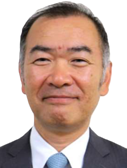
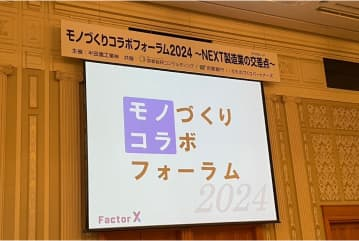
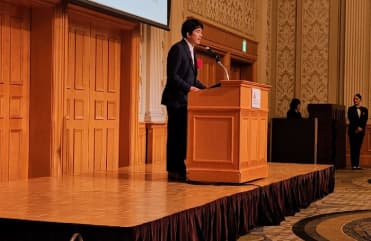
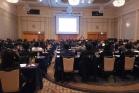
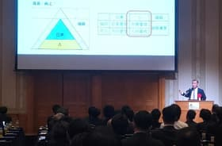
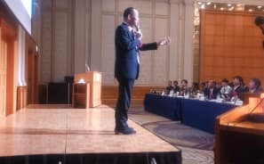
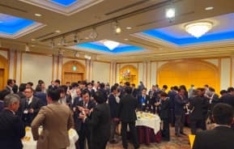
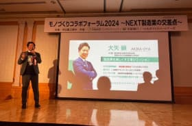
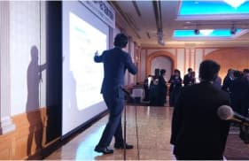
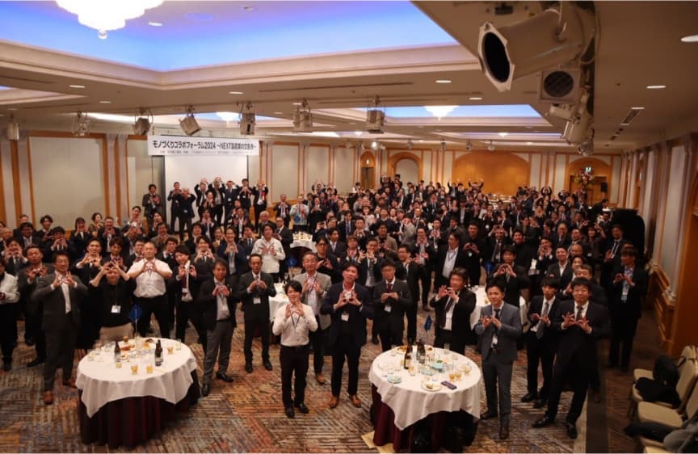

モノづくり
コラボ
フォーラム
2024
～ NEXT製造業の交差点～
-
開催日時
2024年11月28日（木曜日）
講演：15:00～16:45（受付開始14:30）
大交流会：17:00～19:00
-
会場
名古屋マリオットアソシアホテル
16F タワーズボールルーム
製造業のあらゆる課題をマッチングで解決する
モノづくりコラボフォーラム2024
クロスロード ～NEXT製造業の交差点～
2022年6月に製造業界を軸とした企業の様々な経営課題を解決するための次世代型マッチングプラットフォーム「Factor X」をリリースしました。 近年国内製造業界は、世界各国との激しい競争環境の渦中にあり、多くの企業が生き残りを懸けた難しい経営に直面しています。 その中でも「企業の垣根の超えた課題解決」「人材不足」という点において、業界全体の大きな課題となっており、我々はその課題を解決することを最大のミッションとして捉え、サービスを提供して行きたいと考えております。 このたび、これらの課題を解決するために「モノづくりコラボフォーラム〜NEXT製造業の交差点〜」を開催します。 業界における新たなニーズなど、さまざまな課題とものづくり技術のポテンシャルの出会いが変革志向のものづくりの起点となることを願っています。
講演者案内
株式会社豊田自動織機
人事部 桑野 安史 氏
株式会社豊田自動織機
人事部 桑野 安史 氏

略歴
株式会社豊田自動織機製作所
（現：株式会社豊田自動織機）入社
一般社団法人日本能率協会
「第一線監督者の集い：名古屋」
企画委員会 委員長就任
第40回 第一線監督者の集い 名古屋
人事部 主査
幹部職
定年退職
キャリアパートナー
講演内容
ものづくりの強い会社は、何が強いのか？
それは、人と人の繋がりを大切にしているからではないでしょうか。
社員同士の繋がりや他社(者)との繋がりは離職率の低下やモチベーション維持に繋がり、生産性の向上に関係していくと感じてます。
講演では、VUCAの中で、人の力につながる事例などをご紹介させていただきます。
筒井工業株式会社
代表取締役社長 前島 靖浩 氏
筒井工業株式会社
代表取締役社長 前島 靖浩 氏
略歴
名古屋工業大学
応用化学科卒業
筒井工業株式会社 入社
技術部配属
技術部 部長就任
LABプロファイル® トレーナー資格を取得
風土改革コンサルティング事業部 T-CX創設
現在に至る
講演内容
なぜ、人材確保や育成は難しいのか？
その原因と改善の秘訣
8年前の筒井工業株式会社では下記のような問題がありました。
ー 従業員のやらされ感がつよく、自分で考動しない
ー 連携が悪く、しくみがうまくまわらない
ー 採用募集しても、応募がない
ー 新人はすぐ離職（離職率95%）
そのため長時間残業が発生し現場の疲弊は著しく、将来的な存続すら危ういという状況に追い込まれました。
そこで 6年前から試行錯誤の改革を始め、今では新卒採用26名、3年離職率7%、20代比率が4割となりました。
また、従業員の自主性と一体感の向上により生産性・売上・有給取得率が向上し、残業は激減しました。
講演では、「働き方改革」と「働きがい改革」を同時に成し遂げたその秘訣をお伝えします。
アーカイブ
社長あいさつ
-

会場内スクリーン -

社長あいさつの様子
社長あいさつについての内容テキストがここに入る。社長あいさつについての内容テキストがここに入る。社長あいさつについての内容テキストがここに入る。社長あいさつについての内容テキストがここに入る。社長あいさつについての内容テキストがここに入る。社長あいさつについての内容テキストがここに入る。社長あいさつについての内容テキストがここに入る。社長あいさつについての内容テキストがここに入る。社長あいさつについての内容テキストがここに入る。
講演会の様子
-

講演会会場の様子 -

桑野氏の講演 -

前島氏の講演
講演会では、株式会社豊田自動織機 桑野様と筒井工業株式会社 前島様から自社の人材育成に関する取組みについてお話をいただきました。その他講演会に関するテキストがここに入る。その他講演会に関するテキストがここに入る。その他講演会に関するテキストがここに入る。その他講演会に関するテキストがここに入る。その他講演会に関するテキストがここに入る。その他講演会に関するテキストがここに入る。その他講演会に関するテキストがここに入る。その他講演会に関するテキストがここに入る。その他講演会に関するテキストがここに入る。その他講演会に関するテキストがここに入る。その他講演会に関するテキストがここに入る。その他講演会に関するテキストがここに入る。その他講演会に関するテキストがここに入る。
大交流会の様子
-

大交流会の様子 -

共催者紹介 -

大交流会内イベントの様子

参加者全体集合写真大交流会では、日本の製造業のさらなる発展に取組む一般社団法人ものづくりパートナーズ様の活動事例を紹介するとともに、参加者皆様の交流の場とすることができました。その他交流会に関するテキストがここに入る。その他交流会に関するテキストがここに入る。その他交流会に関するテキストがここに入る。その他交流会に関するテキストがここに入る。その他交流会に関するテキストがここに入る。その他交流会に関するテキストがここに入る。その他交流会に関するテキストがここに入る。その他交流会に関するテキストがここに入る。その他交流会に関するテキストがここに入る。その他交流会に関するテキストがここに入る。その他交流会に関するテキストがここに入る。その他交流会に関するテキストがここに入る。その他交流会に関するテキストがここに入る。その他交流会に関するテキストがここに入る。その他交流会に関するテキストがここに入る。その他交流会に関するテキストがここに入る。その他交流会に関するテキストがここに入る。その他交流会に関するテキストがここに入る。
モノコラ参加者の感想
モノコラ2024に参加いただいた皆様よりご感想をいただきました。その中で一部を掲載いたします。皆様貴重なご意見・ご感想をありがとうございました。次回のモノコラの参考にさせていただきます。
参加者の感想
- アンケート結果で良かった点についてのコメントを箇条書き
- アンケート結果で良かった点についてのコメントを箇条書きアンケート結果で良かった点についてのコメントを箇条書きアンケート結果で良かった点についてのコメントを箇条書き
- アンケート結果で良かった点についてのコメントを箇条書きアンケート結果で良かった点についてのコメントを箇条書き
- アンケート結果で良かった点についてのコメントを箇条書き
- アンケート結果で良かった点についてのコメントを箇条書きアンケート結果で良かった点についてのコメントを箇条書き